打开iOA界面后——返回桌面——从屏幕底部上滑从屏幕底部向上滑动（有导航栏的点击多任务按钮）——进入多任务页面 —— 点击该应用卡片上的应用图标——选择锁定此应用——右上角出现锁定标志表示锁定成功。
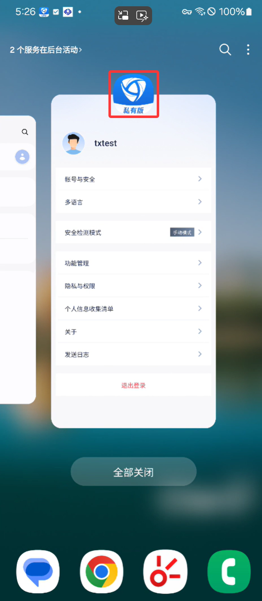
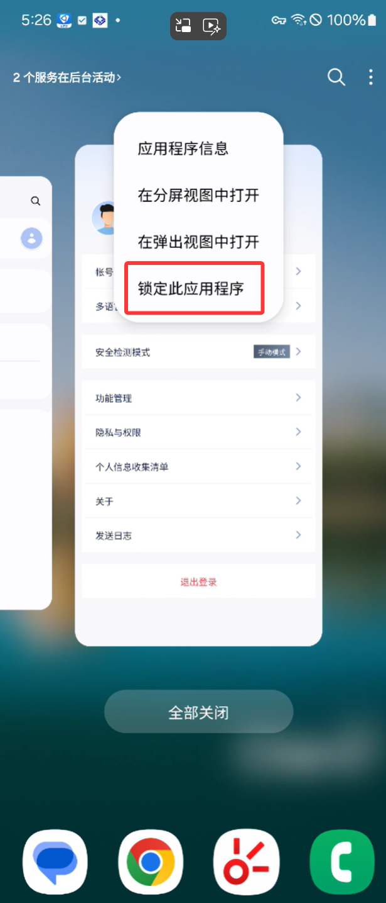
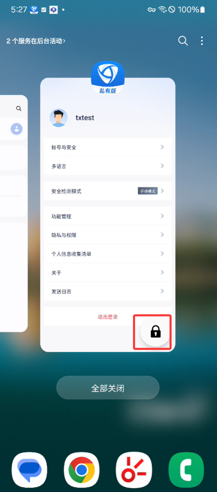
锁定后，可避免点击【清除】时清理iOA。但需注意的是，如果单独拖动多任务页面中的iOA窗口并上滑，仍会清理掉iOA。
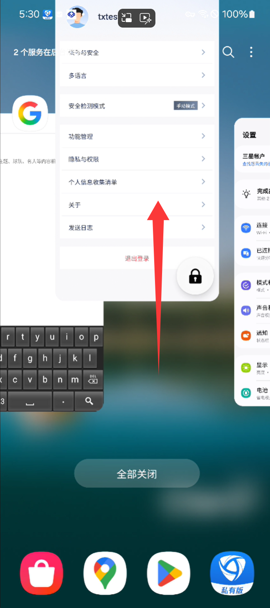
手机状态栏下拉——点击设置图标——电池——关闭【省电模式】 / 关闭【超级省电模式】（如有打开）
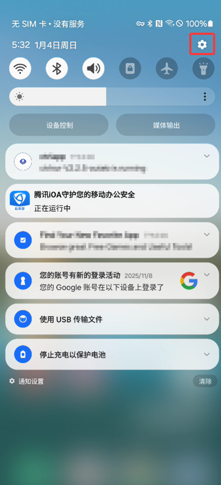
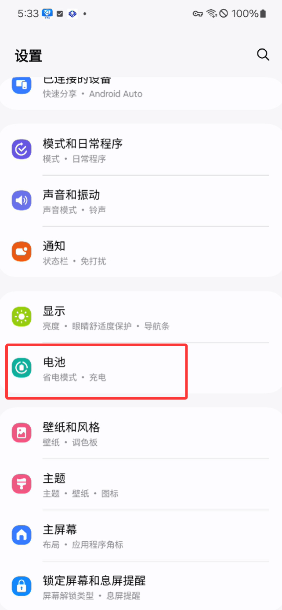
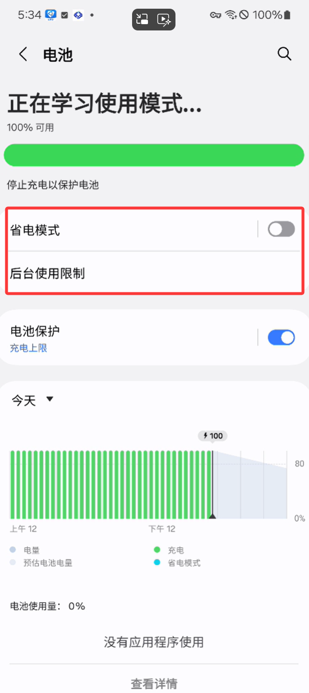
进入电池——后台使用限制——从不自动休眠的应用程序——设置iOA不休眠
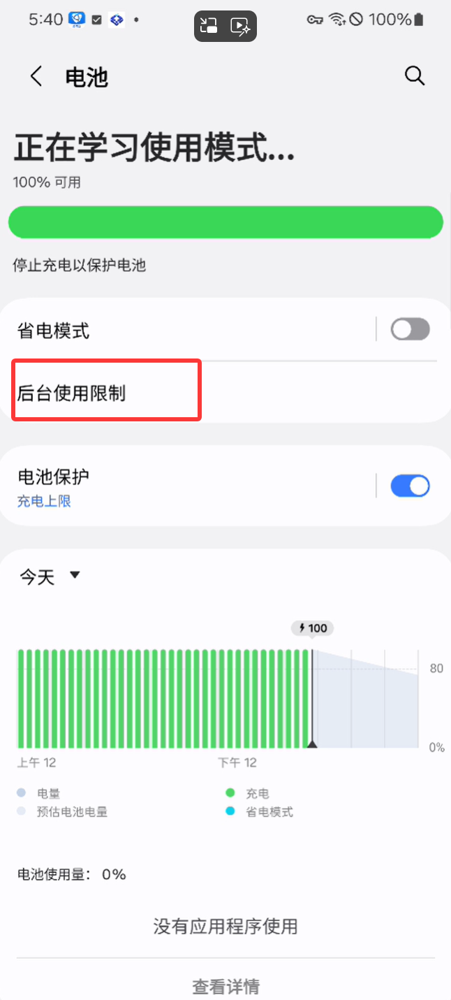
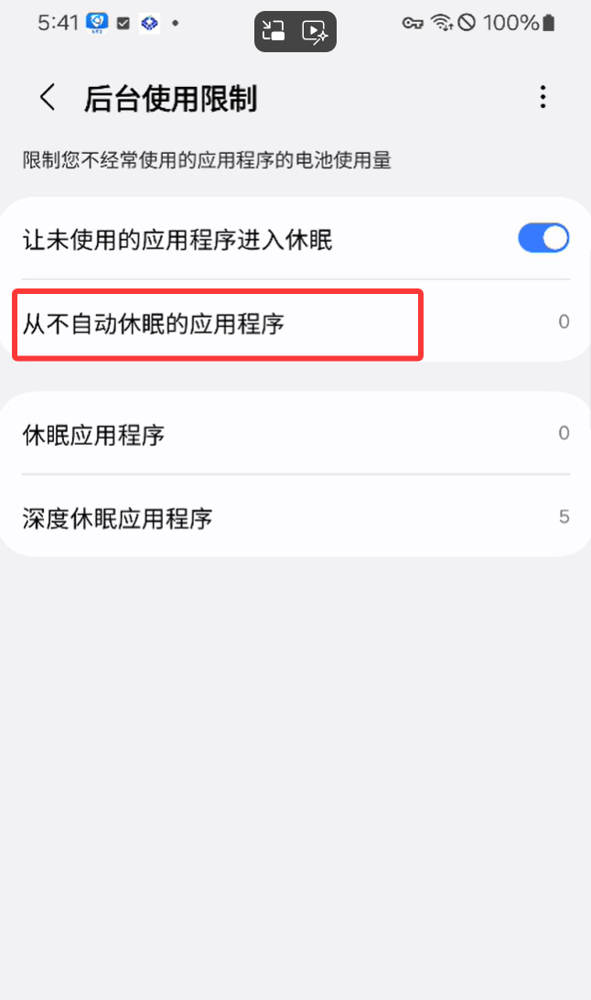
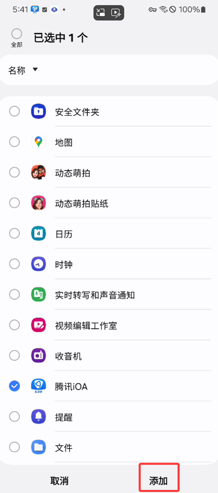
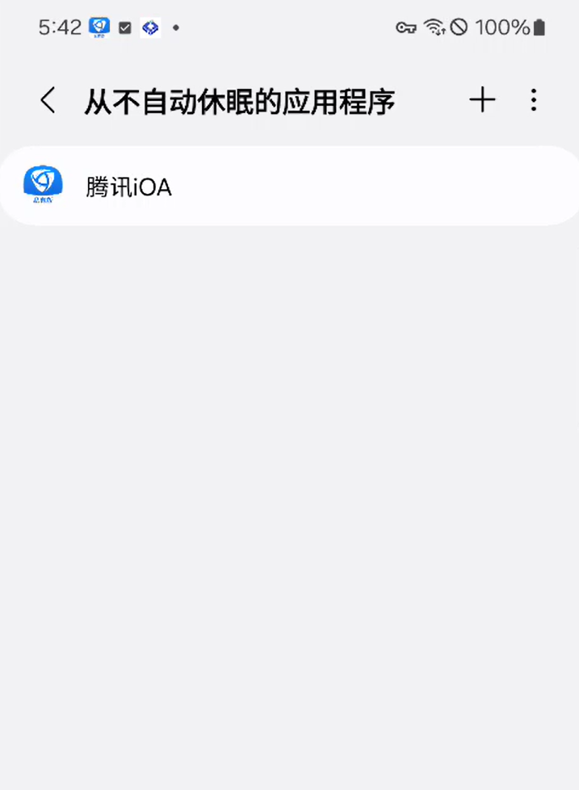